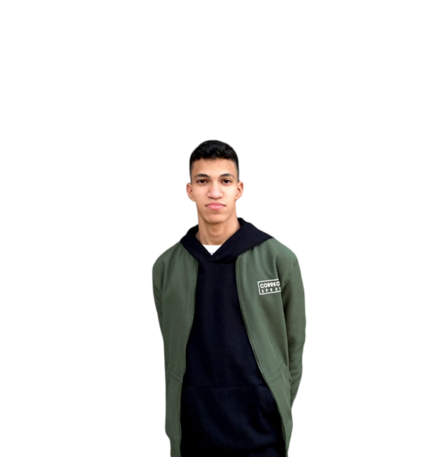

Mostafa Yosri
Data Entry Specialist | Skilled in programming, design, and social media management | Passionate about technology and growth
Welcome to my page! Here you can explore my work, skills, and professional journey.
Contact Me
Facebook
Instagram
LinkedIn